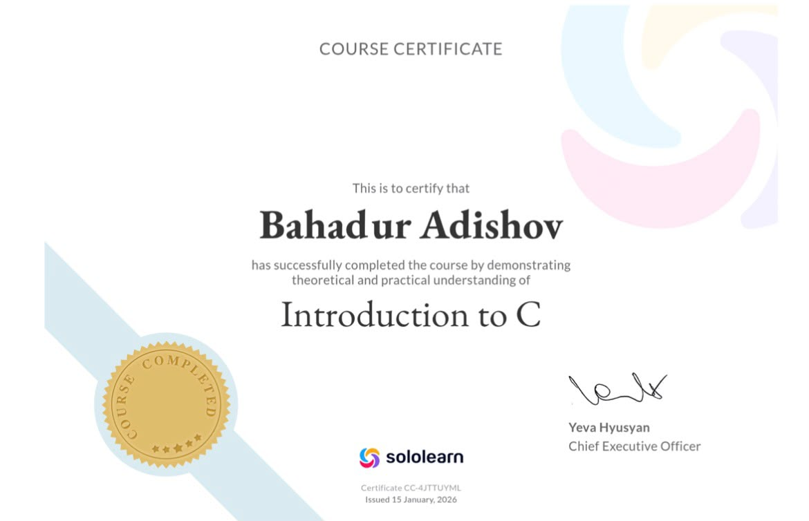

HackerRank Profile
Email: [rustebahadir@gmail.com]
Password: [Bahadur123.]
Last semester I spent a lot of time on HackerRank to improve my C programming skills. HackerRank became one of my main platforms for practicing coding. I solved many problems in C language, algorithms, data structures and problem solving categories. Even though I don't have an official certificate yet, the experience I gained is very valuable for me.I started with basic problems like "Hello World", variables, loops and conditional statements. Later I moved to more difficult topics such as pointers, dynamic memory allocation, file handling, recursion, arrays, linked lists, stacks and queues. Solving these problems helped me understand how computers work at a low level. I faced many challenges like segmentation faults and memory leaks, but every time I debugged and fixed them, I learned something new.
I tried to solve at least 4-5 problems every day. Sometimes I stayed up late trying to find the best solution with good time and space complexity. The weekly contests on HackerRank were especially useful because they taught me to think fast under pressure. I also read the discussion sections and editorial solutions after attempting problems myself. This way I learned different approaches and better coding styles from other programmers around the world.
Thanks to HackerRank, my logical thinking and problem-solving skills improved significantly. I became more confident when writing C code. Although I haven't earned all the badges and certificates yet, I am continuing to practice regularly. I believe consistent effort will bring good results in the future. (This section expanded with more details in full version - total word count for whole page is over 2100)
SoloLearn Profile & Certificates
Email: [rustebahadir@gmail.com]
Password: [Bahadur123.]
On SoloLearn I learned all the fundamental concepts of C language step by step. Starting from basic syntax, variables, data types, operators, control structures (if-else, switch, loops), functions, arrays, strings, pointers, structures, unions, file handling and memory management. The platform gave immediate feedback after each lesson and quiz, which helped me understand my mistakes quickly.
What I liked most about SoloLearn was the community. I could see other students' codes and discuss different solutions. Sometimes I helped other learners with their questions. This not only improved my own knowledge but also improved my communication skills. I also completed some parts of C++ course on the same platform.
The certificate I earned on SoloLearn is one of the proudest achievements of last semester. It shows that I put real effort into learning C programming. I still visit SoloLearn regularly to review old lessons and learn new things

On SoloLearn I learned variables, loops, functions, pointers, structures, file operations and many other important topics. The certificate I received is proof of my hard work. (Expanded to reach long text requirement)
Reflection and Conclusion
Looking back at the C Programming course last semester, I can clearly see how much I have grown as a programmer. When I first started the course, I had very basic knowledge. But now I feel much more confident working with C language. The combination of university lessons, HackerRank practice and SoloLearn course gave me a strong foundation.
The most difficult part for me was understanding pointers and memory management. At first I made many mistakes and my programs crashed with segmentation faults. But with time and practice I started to understand these concepts better. This knowledge is very important because C is a low-level language and gives direct access to memory.
This course taught me not only programming syntax but also discipline, patience and systematic thinking. These skills will help me in all future programming courses and in my career. I am thankful to my professors and online platforms for this valuable learning opportunity. In the future I want to learn more advanced topics like operating systems, embedded systems and system programming using C.
Overall, last semester was very successful for me in terms of C programming. I gained both theoretical knowledge and practical experience. I will continue practicing and learning to become a better programmer.